CODING AGENTS AS PIXEL WORLD MODELS
traex/DeepSeek-V4.1-Flash · 0073
点击播放 · 原生 RGB 像素
逐轮保存的候选
回放视频、检查图与代码变化。
每份候选均可单独播放。实际图片检查记录在下方工具轨迹中。
候选 01播放与检查图
点击播放 · 原生 RGB 像素

展开代码变化
--- 上一保存版本
+++ 本次保存版本
@@ -0,0 +1,306 @@
+from pathlib import Path
+
+import cv2
+import numpy as np
+from PIL import Image
+from scipy import ndimage
+
+import artifact_io
+
+
+W, H = 256, 144
+N, FPS = 20, 4
+SS = 4
+CASE_DIR = Path(__file__).resolve().parent
+
+
+def normalized_blur_fill(image, unknown, sigma):
+ """Fill a masked region with a smooth normalized convolution."""
+ known = (~unknown).astype(np.float32)
+ values = image.astype(np.float32) * known[..., None]
+ weights = ndimage.gaussian_filter(known, sigma, mode="nearest")
+ smooth = np.empty_like(values)
+ for channel in range(3):
+ smooth[..., channel] = ndimage.gaussian_filter(
+ values[..., channel], sigma, mode="nearest"
+ )
+ return smooth / np.maximum(weights[..., None], 1e-4)
+
+
+def make_clean_plate(source):
+ """Remove the animated objects while retaining the photographed scene."""
+ yy, xx = np.mgrid[:H, :W]
+ mask = np.zeros((H, W), np.uint8)
+
+ # The upright block and its immediate contact shadow.
+ mask[82:120, 147:162] = 255
+ contact = np.array(
+ [[132, 108], [149, 106], [159, 114], [157, 120], [132, 120]],
+ np.int32,
+ )
+ cv2.fillPoly(mask, [contact], 255)
+
+ # The large cast shadow on the rear wall.
+ wall_shadow = np.array(
+ [[72, 46], [101, 46], [102, 97], [72, 97]], np.int32
+ )
+ cv2.fillPoly(mask, [wall_shadow], 255)
+
+ cleaned = cv2.inpaint(source, mask, 4, cv2.INPAINT_TELEA)
+
+ # Inpainting a broad, smooth wall region can look streaked. Replace that
+ # area with a low-frequency reconstruction plus the wall's local grain.
+ wall_unknown = np.zeros((H, W), bool)
+ wall_unknown[44:99, 70:103] = True
+ smooth = normalized_blur_fill(source, wall_unknown, 11.0)
+
+ grain_source = source[44:99, 103:136].astype(np.float32)
+ grain_low = cv2.GaussianBlur(grain_source, (0, 0), 2.2)
+ grain = grain_source - grain_low
+ grain = np.flip(grain, axis=1)
+ grain = np.roll(grain, -5, axis=0)
+ patch = smooth[44:99, 70:103]
+ patch += grain * 0.72
+
+ feather = cv2.GaussianBlur(wall_unknown.astype(np.float32), (0, 0), 1.4)
+ feather = np.clip(feather * 1.25, 0.0, 1.0)[..., None]
+ cleaned_f = cleaned.astype(np.float32)
+ filled = cleaned_f.copy()
+ filled[44:99, 70:103] = patch
+ cleaned_f = cleaned_f * (1.0 - feather) + filled * feather
+ return np.clip(cleaned_f, 0, 255).astype(np.uint8)
+
+
+def project(points, camera, target, focal=100.0, cx=154.5, cy=101.8):
+ camera = np.asarray(camera, np.float64)
+ target = np.asarray(target, np.float64)
+ forward = target - camera
+ forward /= np.linalg.norm(forward)
+ right = np.cross(forward, np.array([0.0, 0.0, 1.0]))
+ right /= np.linalg.norm(right)
+ up = np.cross(right, forward)
+
+ relative = points - camera
+ xc = relative @ right
+ yc = relative @ up
+ zc = relative @ forward
+ screen = np.empty((len(points), 3), np.float64)
+ screen[:, 0] = cx + focal * xc / zc
+ screen[:, 1] = cy - focal * yc / zc
+ screen[:, 2] = zc
+ return screen
+
+
+def cuboid_geometry(theta):
+ w, d, height = 0.82, 0.62, 2.90
+ local = np.array(
+ [
+ [-w / 2, -d / 2, 0],
+ [w / 2, -d / 2, 0],
+ [w / 2, d / 2, 0],
+ [-w / 2, d / 2, 0],
+ [-w / 2, -d / 2, height],
+ [w / 2, -d / 2, height],
+ [w / 2, d / 2, height],
+ [-w / 2, d / 2, height],
+ ],
+ np.float64,
+ )
+ c, s = np.cos(theta), np.sin(theta)
+ rotation = np.array([[c, -s, 0], [s, c, 0], [0, 0, 1]], np.float64)
+ world = local @ rotation.T
+ camera = np.array([0.72, -10.0, 4.55])
+ target = np.array([0.0, 0.0, 1.45])
+ screen = project(world, camera, target)
+ return world, screen
+
+
+def block_color_profile(source):
+ # Use the photographed blue face as the material's vertical light profile.
+ profile = source[87:116, 151:158].astype(np.float32).mean(axis=1)
+ profile = cv2.GaussianBlur(
+ profile[:, None, :], (1, 5), sigmaX=0.0, sigmaY=0.55
+ )[:, 0]
+ return profile
+
+
+def render_block(theta, source, size):
+ world, screen = cuboid_geometry(theta)
+ camera = np.array([0.72, -10.0, 4.55])
+ profile = block_color_profile(source)
+
+ faces = [
+ ([0, 1, 5, 4], np.array([0.0, -1.0, 0.0]), 1.00),
+ ([1, 2, 6, 5], np.array([1.0, 0.0, 0.0]), 0.95),
+ ([2, 3, 7, 6], np.array([0.0, 1.0, 0.0]), 0.72),
+ ([3, 0, 4, 7], np.array([-1.0, 0.0, 0.0]), 0.82),
+ ]
+ c, s = np.cos(theta), np.sin(theta)
+ rotation = np.array([[c, -s, 0], [s, c, 0], [0, 0, 1]], np.float64)
+
+ color = np.zeros((size[1], size[0], 3), np.float32)
+ alpha = np.zeros((size[1], size[0]), np.float32)
+ face_masks = []
+
+ for indices, local_normal, factor in faces:
+ normal = rotation @ local_normal
+ center = world[indices].mean(axis=0)
+ if np.dot(normal, camera - center) <= 0:
+ continue
+ poly = np.rint(screen[indices, :2] * SS).astype(np.int32)
+ depth = screen[indices, 2].mean()
+ face_masks.append((depth, poly, factor))
+
+ # Top face, rendered last because it caps the cuboid.
+ top_indices = [4, 5, 6, 7]
+ top_poly = np.rint(screen[top_indices, :2] * SS).astype(np.int32)
+
+ face_masks.sort(key=lambda item: -item[0])
+ for _, poly, factor in face_masks:
+ mask = np.zeros((size[1], size[0]), np.uint8)
+ cv2.fillPoly(mask, [poly], 255, lineType=cv2.LINE_AA)
+ inside = mask > 0
+ ys = np.flatnonzero(inside.any(axis=1))
+ if len(ys) == 0:
+ continue
+ y0, y1 = int(ys[0]), int(ys[-1])
+ rows = np.arange(y0, y1 + 1, dtype=np.float32)
+ t = np.clip((rows - y0) / max(y1 - y0, 1), 0.0, 1.0)
+ profile_rows = np.rint(t * (len(profile) - 1)).astype(int)
+ gradient = profile[profile_rows] * factor
+ gradient *= (1.0 + 0.055 * (1.0 - t))[:, None]
+ face_rgb = np.zeros_like(color)
+ face_rgb[y0 : y1 + 1] = gradient[:, None, :]
+
+ noise = np.random.default_rng(700 + int(theta * 1000)).normal(
+ 0.0, 2.0, (y1 - y0 + 1, size[0], 1)
+ )
+ face_rgb[y0 : y1 + 1] += noise
+ color[inside] = face_rgb[inside]
+ alpha[inside] = 1.0
+
+ # The narrow top face is darker than the sides in the reference lighting.
+ top_mask = np.zeros((size[1], size[0]), np.uint8)
+ cv2.fillPoly(top_mask, [top_poly], 255, lineType=cv2.LINE_AA)
+ top_inside = top_mask > 0
+ top_color = np.array([12.0, 51.0, 88.0], np.float32)
+ color[top_inside] = top_color
+ alpha[top_inside] = 1.0
+
+ return np.clip(color, 0, 255), np.clip(alpha, 0, 1)
+
+
+def shadow_points(theta):
+ _, screen = cuboid_geometry(theta)
+ points = []
+ for i in range(8):
+ z_high = i >= 4
+ sx = 87.5 + 2.86 * (screen[i, 0] - 154.5)
+ if z_high:
+ sy = 48.0 + 0.11 * (screen[i, 1] - 87.0)
+ else:
+ sy = 95.0 + 0.11 * (screen[i, 1] - 115.0)
+ points.append([sx, sy])
+ return cv2.convexHull(np.asarray(points, np.float32))
+
+
+def render_wall_shadow(theta, size):
+ mask = np.zeros((size[1], size[0]), np.uint8)
+ points = np.rint(shadow_points(theta) * SS).astype(np.int32)
+ cv2.fillPoly(mask, [points], 255, lineType=cv2.LINE_AA)
+ mask_f = cv2.GaussianBlur(mask.astype(np.float32) / 255.0, (0, 0), 1.15)
+ return np.clip(mask_f, 0, 1)
+
+
+def platform_shadow_points(theta):
+ w, d = 0.82, 0.62
+ local = np.array(
+ [[-w / 2, -d / 2], [w / 2, -d / 2], [w / 2, d / 2], [-w / 2, d / 2]],
+ np.float64,
+ )
+ c, s = np.cos(theta), np.sin(theta)
+ rotation = np.array([[c, -s], [s, c]])
+ footprint = local @ rotation.T
+ points = []
+ for u, v in footprint:
+ px = 154.5 + 8.4 * u - 4.8
+ py = 115.0 + 1.8 * v + 0.4
+ points.append([px, py])
+ return cv2.convexHull(np.asarray(points, np.float32))
+
+
+def render_platform_shadow(theta, size):
+ mask = np.zeros((size[1], size[0]), np.uint8)
+ points = np.rint(platform_shadow_points(theta) * SS).astype(np.int32)
+ cv2.fillPoly(mask, [points], 255, lineType=cv2.LINE_AA)
+ mask_f = cv2.GaussianBlur(mask.astype(np.float32) / 255.0, (0, 0), 1.35)
+ return np.clip(mask_f, 0, 1)
+
+
+def render_platform_mark(theta, size):
+ mask = np.zeros((size[1], size[0]), np.uint8)
+ cx, cy = 153.7, 109.5
+ rx, ry = 20.6, 7.1
+
+ def point(radius, angle):
+ return (
+ int(round((cx + radius * rx * np.sin(angle)) * SS)),
+ int(round((cy + radius * ry * np.cos(angle)) * SS)),
+ )
+
+ p0 = point(0.56, theta)
+ p1 = point(0.84, theta)
+ cv2.line(mask, p0, p1, 255, max(1, SS), cv2.LINE_AA)
+ return cv2.GaussianBlur(mask.astype(np.float32) / 255.0, (0, 0), 0.55)
+
+
+def composite_frame(base, theta, source, frame_index):
+ size = (W * SS, H * SS)
+ base_hr = cv2.resize(base, size, interpolation=cv2.INTER_NEAREST)
+ frame = base_hr.astype(np.float32)
+
+ wall_mask = render_wall_shadow(theta, size)
+ wall_mask *= (np.arange(H * SS)[:, None] < 98 * SS)
+ frame *= (1.0 - 0.78 * wall_mask[..., None])
+
+ platform_mask = render_platform_shadow(theta, size)
+ frame *= (1.0 - 0.52 * platform_mask[..., None])
+
+ # A subtle physical index mark makes the platform's clockwise rotation
+ # legible while staying consistent with the black turntable.
+ mark = render_platform_mark(theta, size)
+ mark_strength = min(1.0, frame_index / 3.0) * 0.34
+ mark_color = np.array([92.0, 91.0, 94.0], np.float32)
+ frame = frame * (1.0 - mark[..., None] * mark_strength)
+ frame += mark[..., None] * mark_strength * mark_color
+
+ block_rgb, block_alpha = render_block(theta, source, size)
+ frame = frame * (1.0 - block_alpha[..., None]) + block_rgb * block_alpha[..., None]
+
+ return cv2.resize(
+ np.clip(frame, 0, 255).astype(np.uint8),
+ (W, H),
+ interpolation=cv2.INTER_AREA,
+ )
+
+
+def main():
+ source = np.asarray(Image.open(CASE_DIR / "first_frame.png").convert("RGB"))
+ clean = make_clean_plate(source)
+ Image.fromarray(clean).save(CASE_DIR / ".tmp" / "clean_plate.png")
+
+ frames = np.empty((N, H, W, 3), np.uint8)
+ frames[0] = source
+
+ # About 170 degrees over the five-second shot, sampled at 4 fps.
+ total_rotation = np.deg2rad(170.0)
+ for index in range(1, N):
+ time_s = index / FPS
+ theta = total_rotation * time_s / 5.0
+ frames[index] = composite_frame(clean, theta, source, index)
+
+ artifact_io.save(frames, CASE_DIR)
+
+
+if __name__ == "__main__":
+ main()
候选 02播放与检查图
点击播放 · 原生 RGB 像素

展开代码变化
--- 上一保存版本
+++ 本次保存版本
@@ -92,7 +92,7 @@
def cuboid_geometry(theta):
- w, d, height = 0.82, 0.62, 2.90
+ w, d, height = 0.82, 0.34, 2.90
local = np.array(
[
[-w / 2, -d / 2, 0],
@@ -213,7 +213,7 @@
def platform_shadow_points(theta):
- w, d = 0.82, 0.62
+ w, d = 0.82, 0.34
local = np.array(
[[-w / 2, -d / 2], [w / 2, -d / 2], [w / 2, d / 2], [-w / 2, d / 2]],
np.float64,
@@ -292,8 +292,8 @@
frames = np.empty((N, H, W, 3), np.uint8)
frames[0] = source
- # About 170 degrees over the five-second shot, sampled at 4 fps.
- total_rotation = np.deg2rad(170.0)
+ # A little over a quarter turn across the five-second shot.
+ total_rotation = np.deg2rad(100.0)
for index in range(1, N):
time_s = index / FPS
theta = total_rotation * time_s / 5.0
候选 03播放与检查图
点击播放 · 原生 RGB 像素
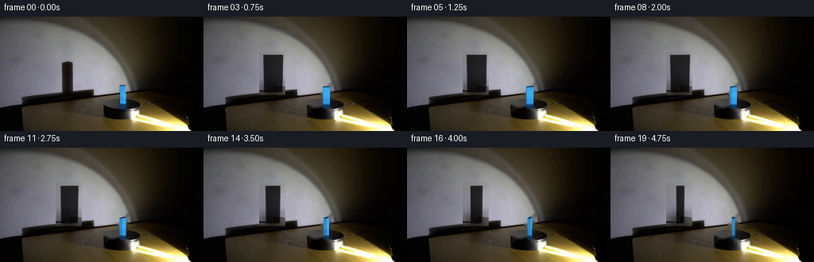
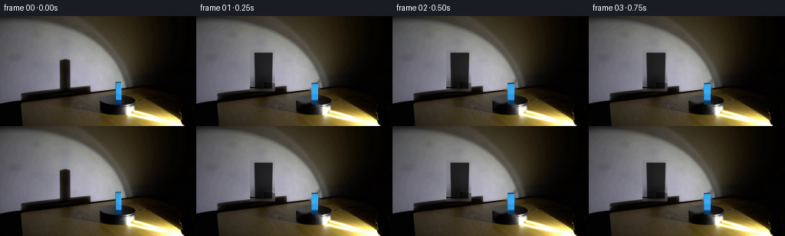
展开代码变化
--- 上一保存版本
+++ 本次保存版本
@@ -237,23 +237,6 @@
return np.clip(mask_f, 0, 1)
-def render_platform_mark(theta, size):
- mask = np.zeros((size[1], size[0]), np.uint8)
- cx, cy = 153.7, 109.5
- rx, ry = 20.6, 7.1
-
- def point(radius, angle):
- return (
- int(round((cx + radius * rx * np.sin(angle)) * SS)),
- int(round((cy + radius * ry * np.cos(angle)) * SS)),
- )
-
- p0 = point(0.56, theta)
- p1 = point(0.84, theta)
- cv2.line(mask, p0, p1, 255, max(1, SS), cv2.LINE_AA)
- return cv2.GaussianBlur(mask.astype(np.float32) / 255.0, (0, 0), 0.55)
-
-
def composite_frame(base, theta, source, frame_index):
size = (W * SS, H * SS)
base_hr = cv2.resize(base, size, interpolation=cv2.INTER_NEAREST)
@@ -265,14 +248,6 @@
platform_mask = render_platform_shadow(theta, size)
frame *= (1.0 - 0.52 * platform_mask[..., None])
-
- # A subtle physical index mark makes the platform's clockwise rotation
- # legible while staying consistent with the black turntable.
- mark = render_platform_mark(theta, size)
- mark_strength = min(1.0, frame_index / 3.0) * 0.34
- mark_color = np.array([92.0, 91.0, 94.0], np.float32)
- frame = frame * (1.0 - mark[..., None] * mark_strength)
- frame += mark[..., None] * mark_strength * mark_color
block_rgb, block_alpha = render_block(theta, source, size)
frame = frame * (1.0 - block_alpha[..., None]) + block_rgb * block_alpha[..., None]
可观测工具轨迹
实际执行的命令与返回图片。
命令 1exit 0
/bin/bash -lc "pwd && rg --files -g '"'!*__pycache__*'"' -g '"'!*.pyc'"' | sort | sed -n '1,200p'"
命令 2exit 0
/bin/bash -lc "sed -n '1,240p' prompt.txt"
命令 3exit 0
/bin/bash -lc "sed -n '1,320p' GENERATION_RULES.md"
命令 4exit 0
/bin/bash -lc 'file first_frame.png && identify first_frame.png 2>/dev/null || true && git status --short 2>/dev/null || true'
命令 5exit 0
/bin/bash -lc "sed -n '1,280p' artifact_io.py"
命令 6exit 0
/bin/bash -lc "python - <<'PY'
from PIL import Image
im=Image.open('first_frame.png')
print(im.size, im.mode)
im.crop((110,65,210,145)).resize((600,480),Image.Resampling.NEAREST).save('.tmp/crop.png')
PY"命令 7exit 0
/bin/bash -lc "python - <<'PY'
from PIL import Image
import numpy as np
im=np.array(Image.open('first_frame.png'))
for y in [40,50,60,70,80,90,100,110,120,130,140]:
print('y',y,[(x,tuple(im[y,x])) for x in [0,20,40,60,75,80,90,100,110,120,140,150,155,160,170,180,190,200,220,240,255]])
print('blue region')
for y in range(82,129,4):
xs=np.where((im[y,:,2]>im[y,:,0]*1.3)&(im[y,:,2]>70))[0]
print(y, xs.min() if len(xs) else None,xs.max() if len(xs) else None, [(x,tuple(im[y,x])) for x in xs[:3]])
PY"命令 8exit 0
/bin/bash -lc "python - <<'PY' mods=['cv2','scipy','numpy','PIL'] for m in mods: try: x=__import__(m); print(m,'ok',getattr(x,'__version__','')) except Exception as e: print(m,'missing',e) PY"
命令 9exit 0
/bin/bash -lc 'ls -la .tmp 2>/dev/null || true && ls -la'
命令 10exit 0
/bin/bash -lc "python - <<'PY'
from PIL import Image
im=Image.open('first_frame.png')
for name,box,scale in [('shadow',(20,78,130,105),5),('platform',(125,95,190,140),6),('block',(142,80,168,122),10)]:
c=im.crop(box); c.resize((c.width*scale,c.height*scale),Image.Resampling.NEAREST).save(f'.tmp/{name}.png')
PY"命令 11exit 0
/bin/bash -lc "python - <<'PY'
import cv2, numpy as np
from PIL import Image
im=cv2.cvtColor(cv2.imread('first_frame.png'),cv2.COLOR_BGR2RGB)
mask=np.zeros(im.shape[:2],np.uint8)
# shadow strip
cv2.rectangle(mask,(74,49),(98,94),255,-1)
# block including soft shadow on platform
cv2.rectangle(mask,(147,81),(162,118),255,-1)
base=cv2.inpaint(im,mask,3,cv2.INPAINT_TELEA)
Image.fromarray(base).save('.tmp/base_inpaint.png')
Image.fromarray(base[45:125,60:170]).resize((660,480),Image.Resampling.NEAREST).save('.tmp/base_crop.png')
PY"命令 12exit 0
/bin/bash -lc "python - <<'PY'
from PIL import Image
import numpy as np
im=np.array(Image.open('first_frame.png')).astype(float)
base=np.array(Image.open('.tmp/base_inpaint.png')).astype(float)
d=np.maximum(base-im,0).mean(2)
crop=np.clip(d[45:100,65:110]*6,0,255).astype(np.uint8)
Image.fromarray(crop).resize((450,550),Image.Resampling.NEAREST).save('.tmp/shadow_diff.png')
print('max',d.max(),'percentiles',np.percentile(d[45:100,65:110],[50,75,90,95,99]))
PY"命令 13exit 0
/bin/bash -lc "python - <<'PY'
from PIL import Image
import numpy as np
im=np.array(Image.open('first_frame.png'))
for x in [148,149,150,151,155,158,159,160]:
print('x',x,[(y,tuple(im[y,x])) for y in range(80,123,3)])
PY"命令 14exit 0
/bin/bash -lc "python - <<'PY'
from PIL import Image
im=Image.open('.tmp/base_inpaint.png')
im.crop((55,35,130,105)).resize((600,560),Image.Resampling.NEAREST).save('.tmp/base_shadow_crop.png')
PY"命令 15exit 0
/bin/bash -lc "python - <<'PY'
from PIL import Image
import numpy as np
im=np.array(Image.open('first_frame.png')).astype(int)
# rough blue score
s=im[:,:,2]-(im[:,:,0]+im[:,:,1])/2
for y in range(82,122):
xs=np.where(s[y]>25)[0]
if len(xs): print(y,int(xs.min()),int(xs.max()),len(xs))
PY"命令 16exit 1
/bin/bash -lc 'python generate.py'
命令 17exit 0
/bin/bash -lc 'python generate.py'
命令 18exit 0
/bin/bash -lc "python - <<'PY'
from PIL import Image
for i in [1,3,6,10,15,19]:
im=Image.open(f'frames/{i:02d}.png')
im.crop((115,78,200,128)).resize((680,400),Image.Resampling.NEAREST).save(f'.tmp/f{i:02d}_crop.png')
PY"命令 19exit 0
/bin/bash -lc "python - <<'PY' import generate, numpy as np for t in [0,8.5,17,45,85,170]: w,s=generate.cuboid_geometry(np.deg2rad(t)) print(t, np.round(s[:,:2],1), 'bbox',np.round([s[:,0].min(),s[:,1].min(),s[:,0].max(),s[:,1].max()],1)) PY"
命令 20exit 0
/bin/bash -lc "python - <<'PY'
import cv2, numpy as np
from PIL import Image
for i in [1,3,6,10,15,19]:
im=np.array(Image.open(f'frames/{i:02d}.png'))
# print blue bbox
s=im[:,:,2].astype(int)-(im[:,:,0].astype(int)+im[:,:,1].astype(int))/2
ys,xs=np.where(s>25)
print(i,(xs.min(),ys.min(),xs.max(),ys.max()),'unique',len(set(zip(xs,ys))))
PY"命令 21exit 0
/bin/bash -lc "python - <<'PY'
from PIL import Image
im=Image.open('frames/10.png')
im.crop((0,35,220,125)).resize((880,360),Image.Resampling.NEAREST).save('.tmp/f10_wide.png')
PY"命令 22exit 0
/bin/bash -lc "python - <<'PY' import generate, numpy as np for t in [0,10,25,45,70,90,100]: w,s=generate.cuboid_geometry(np.deg2rad(t)) print(t, 'screen bbox',np.round([s[:,0].min(),s[:,1].min(),s[:,0].max(),s[:,1].max()],1), 'shadow',np.round(generate.shadow_points(np.deg2rad(t)).reshape(-1,2),1).tolist()) PY"
命令 23exit 0
/bin/bash -lc 'python generate.py'
命令 24exit 0
/bin/bash -lc "python - <<'PY' import generate, numpy as np for t in [0,5,10,25,50,75,100]: w,s=generate.cuboid_geometry(np.deg2rad(t)) print(t, np.round([s[:,0].min(),s[:,1].min(),s[:,0].max(),s[:,1].max()],2), 'corners bottom',np.round(s[:4],1).tolist(),'shadow pts', np.round(generate.shadow_points(np.deg2rad(t)).reshape(-1,2),1).tolist()) PY"
命令 25exit 0
/bin/bash -lc "python - <<'PY'
from PIL import Image
import numpy as np
# make an enlarged contact strip of all frames
frames=[]
for i in range(20):
im=Image.open(f'frames/{i:02d}.png')
frames.append(im.crop((120,75,190,125)).resize((280,200),Image.Resampling.NEAREST))
sheet=Image.new('RGB',(5*280,4*200),(20,20,20))
for i,f in enumerate(frames): sheet.paste(f,((i%5)*280,(i//5)*200))
sheet.save('.tmp/all_block.png')
PY"命令 26exit 0
/bin/bash -lc "python - <<'PY'
from PIL import Image
import numpy as np
frames=np.stack([np.array(Image.open(f'frames/{i:02d}.png')).astype(float) for i in range(20)])
d=np.abs(np.diff(frames,axis=0)).mean(axis=(1,2,3))
print('mean diffs',np.round(d,2))
# frame0 exact
print('frame0 exact',np.array_equal(np.array(Image.open('first_frame.png')),np.array(Image.open('frames/00.png'))))
print('npz',np.load('pixels.npz')['pixels'].shape)
# examine dark/bright clipping
for i in [0,1,5,10,19]:
a=frames[i]
print(i,'range',a.min(),a.max(),'mean',a.mean(),'dark%',(a.mean(2)<5).mean()*100)
PY"命令 27exit 0
/bin/bash -lc "python - <<'PY'
from PIL import Image
import numpy as np
for i in [0,1,10,19]:
im=np.array(Image.open(f'frames/{i:02d}.png'))
print('\\nframe',i)
for y in [85,87,89,100,110,114,115,116,117,118,119]:
print(y,[(x,tuple(im[y,x])) for x in [148,149,150,151,154,157,158,159,160]])
PY"命令 28exit 0
/bin/bash -lc "python generate.py && python - <<'PY'
from PIL import Image
import numpy as np
src=np.array(Image.open('first_frame.png'))
frames=np.stack([np.array(Image.open(f'frames/{i:02d}.png')) for i in range(20)])
print('shape',frames.shape,'dtype',frames.dtype,'frame0 exact',np.array_equal(src,frames[0]))
print('mean frame deltas',np.round(np.abs(np.diff(frames.astype(float),axis=0)).mean(axis=(1,2,3)),3))
PY"命令 29exit 0
/bin/bash -lc "python - <<'PY'
from PIL import Image
im=Image.open('frames/19.png')
im.crop((120,80,180,122)).resize((600,420),Image.Resampling.NEAREST).save('.tmp/f19_now.png')
PY"命令 30exit 0
/bin/bash -lc "python - <<'PY'
import numpy as np
from PIL import Image
for i in [1,2,3,4,5,10,19]:
a=np.array(Image.open(f'frames/{i:02d}.png')).astype(float)
# region above top
print(i,'wall top',a[84:88,152:156].mean((0,1)), 'body',a[95:105,153:156].mean((0,1)), 'base',a[114:117,153:156].mean((0,1)))
PY"命令 31exit 0
/bin/bash -lc "python - <<'PY'
from PIL import Image
import numpy as np
src=np.array(Image.open('first_frame.png'))
for y in range(82,89):
print(y, [tuple(src[y,x]) for x in range(147,163)])
PY"命令 32exit 0
/bin/bash -lc "python - <<'PY'
import numpy as np
from PIL import Image
src=np.array(Image.open('first_frame.png'))
f=np.array(Image.open('frames/01.png'))
print('row87 src',src[87,147:162].tolist())
print('row87 f1 ',f[87,147:162].tolist())
print('clean',np.array(Image.open('.tmp/clean_plate.png'))[87,147:162].tolist())
PY"命令 33exit 0
/bin/bash -lc "python - <<'PY'
import generate, cv2, numpy as np
from PIL import Image
src=np.array(Image.open('first_frame.png'))
for t in [0,10,50,100]:
rgb,a=generate.render_block(np.deg2rad(t),src,(1024,576))
# downscale alpha via block presence
a1=cv2.resize(a,(256,144),interpolation=cv2.INTER_AREA)
ys,xs=np.where(a1>.1)
print(t,'a bbox',xs.min(),ys.min(),xs.max(),ys.max(),'top alpha rows',[(y,int((a1[y]>0.1).sum())) for y in range(84,90)])
PY"命令 34exit 0
/bin/bash -lc "python - <<'PY'
from PIL import Image
import numpy as np
src=np.array(Image.open('first_frame.png')).astype(float)
f=np.array(Image.open('frames/01.png')).astype(float)
for y in range(85,120):
print(y, np.round(np.abs(src[y,146:164]-f[y,146:164]).mean(),1))
PY"命令 35exit 0
/bin/bash -lc "python - <<'PY'
import numpy as np
from PIL import Image
f=np.array(Image.open('frames/01.png'))
for y in range(84,120): print(y, f[y,150:160,2].tolist())
PY"命令 36exit 0
/bin/bash -lc "python - <<'PY'
import json, base64, numpy as np
from pathlib import Path
from PIL import Image
p=Path('.')
z=np.load('pixels.npz')['pixels']
assert z.shape==(144,256,20) and z.dtype==np.uint32
unpacked=np.stack([(z>>16)&255,(z>>8)&255,z&255],axis=-1).transpose(2,0,1,3).astype(np.uint8)
source=np.array(Image.open('first_frame.png').convert('RGB'))
assert np.array_equal(unpacked[0],source)
assert all(Path(f'frames/{i:02d}.png').is_file() for i in range(20))
html=Path('index.html').read_text()
assert '__DATA__' not in html and '__ID__' not in html
print('frames',unpacked.shape,'fps',4,'duration',len(unpacked)/4,'first_exact',np.array_equal(unpacked[0],source),'html_bytes',len(html))
PY
ls -lh pixels.npz index.html inspection.png frames/00.png frames/19.png"视觉工具实际返回图片 1
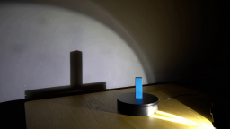
视觉工具实际返回图片 2
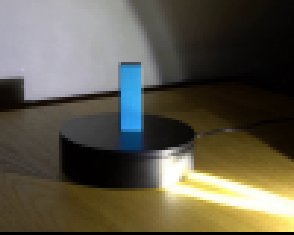
视觉工具实际返回图片 3
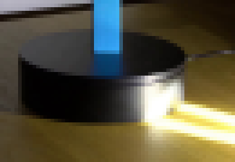
视觉工具实际返回图片 4
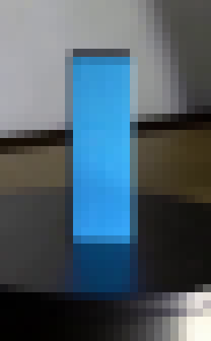
视觉工具实际返回图片 5
视觉工具实际返回图片 6
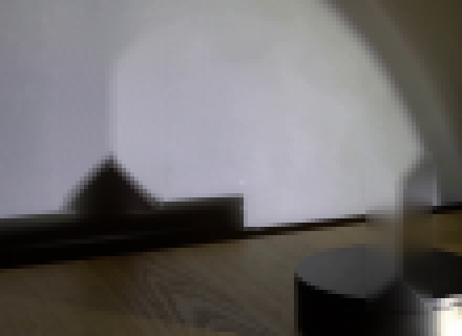
视觉工具实际返回图片 7
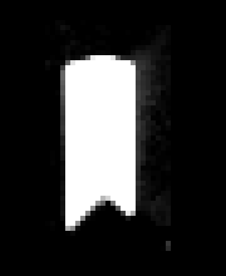
视觉工具实际返回图片 8
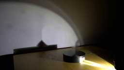
视觉工具实际返回图片 9
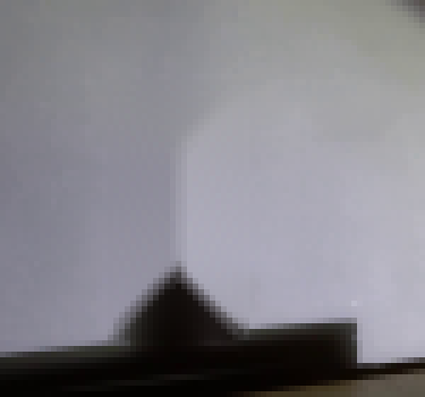
视觉工具实际返回图片 10
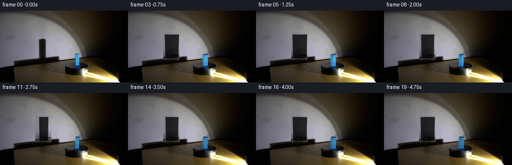
视觉工具实际返回图片 11
视觉工具实际返回图片 12
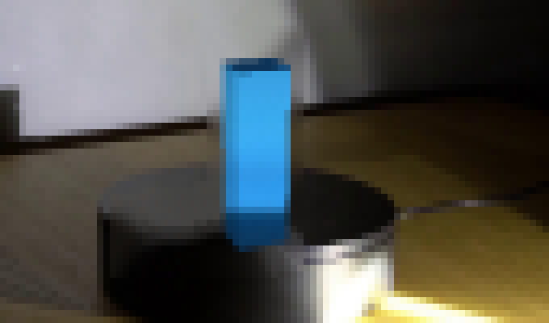
视觉工具实际返回图片 13
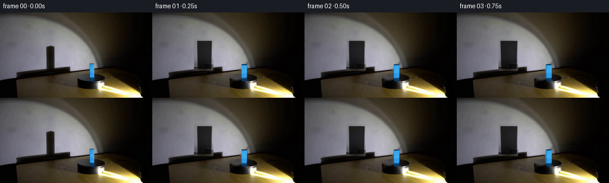
视觉工具实际返回图片 14
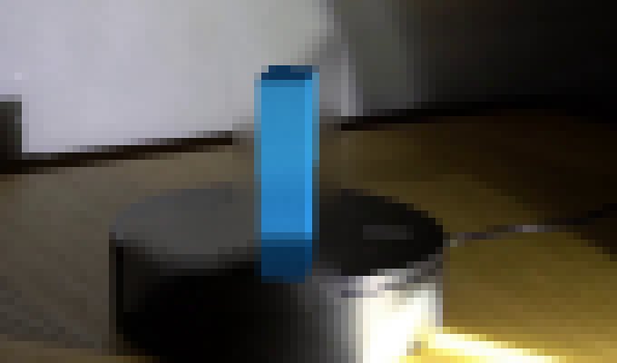
视觉工具实际返回图片 15
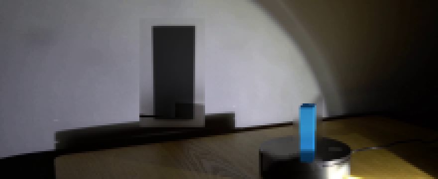
视觉工具实际返回图片 16
视觉工具实际返回图片 17
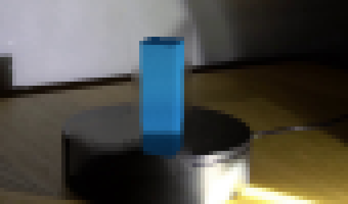
视觉工具实际返回图片 18
视觉工具实际返回图片 19
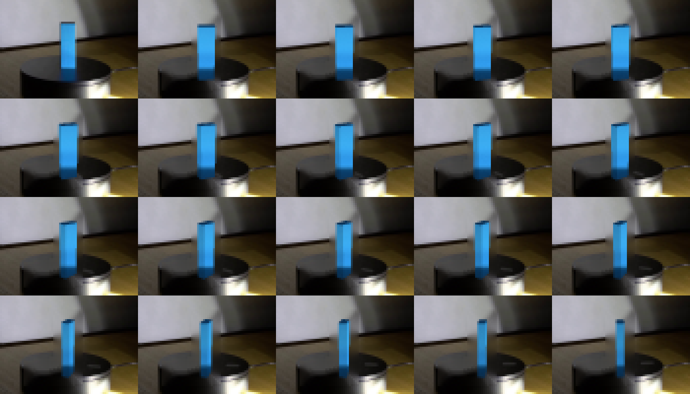
视觉工具实际返回图片 20
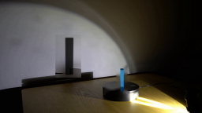
视觉工具实际返回图片 21
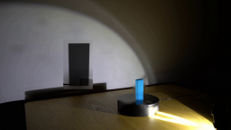
视觉工具实际返回图片 22

视觉工具实际返回图片 23
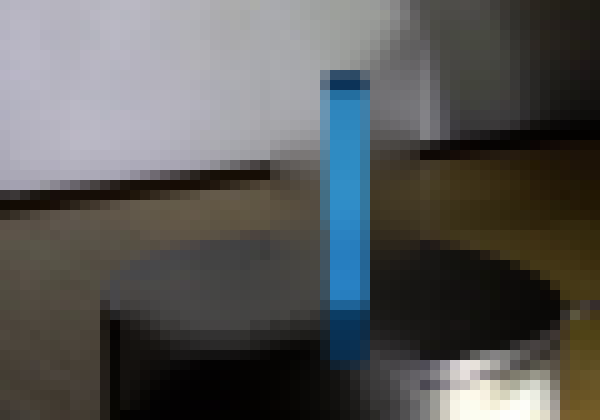
视觉工具实际返回图片 24

保存候选 3 份；完成命令 36 次；可验证图片返回 24 张。原始 API 响应与完整日志保留在本地。